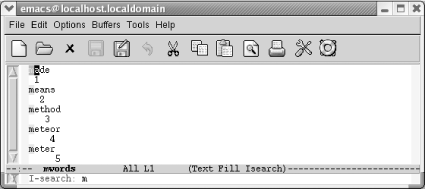
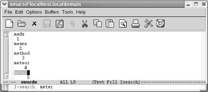

3.1. 不同的查询方式
在编辑的时候，经常会碰到查找已经输入的内容。几乎所有的编辑器都提供一些查找功能，让你查找指定的字符串，而不必翻阅整个文档。Emacs也 是一样。它提供一个查找指令，事实上，它可能提供令人眼花缭乱的查询指令。下面对各种可用的查询方式做一个汇总：
简单查询
告诉Emacs一个字符串，它就会查找下一个匹配项。这和其他编辑器别无二致。
递增查询
递增查询时，当你开始输入字符串的第一个字符时，Emacs就开始查询字符串。在你输入的时候会不停的查询。
单词查询
单词查询与简单查询类似，只不过是Emacs只查询整个单词或短语。例如，你要查找单词 hat ，你不必担心会查到 that 。单词
查找对于跨行的短语也比较有用。
正则表达式查找
模式查询，可以使用正则表达式查询。例如，如果你想查找所有的 B1 和 B2 ，可以通过正则表达式 B [ 12 ] 查找。然
而，正则表达式相当复杂，我们会先给出一个简要的介绍，第11章会有更全面的介绍。
递增正则表达式查询
这个查询方式是 递增查询 和 正则表达式查询 的组合。
你可以向下查询，也可以向上。查询可以是大小写敏感的（例如， This 和 this 是不同的）或者大小写不敏感（例如， This 和 this 是相同的）。默认情况下，查询是不区分大小写的。不过，如果你输入了大写字母，那么这此查询就是大小写敏感的了，因为Emacs认为你既然费 力地准确输入字符就是为了准确查询。
替换操作与查找紧密相关。查找功能还提供一些不同的特性：
简单的查询替换功能
这个功能就是将全文中的一个字符串用另一个字符串替换。一般情况下，这种方式比较粗鲁可能会导致非预期效果。试试询问替换方式。
询问替换
在询问替换中，Emacs有条件的替换全文中的字符串。Emacs查找全文中出现的字符串，并且每次都询问你是否要执行替换操作。如果你只想改变一
部分而不是全部的话，这种替换比较有用，例如替换单词或者短语。
正则表达式替换
正则表达式替换使用功能强大的字符串模式匹配功能来查找和替换。
那么你现在知道要介绍的内容了。不过，不用担心有这么多查询方式可用。事实上，你工作时有99％的情况下使用某种特定的查找和替换指令。例 如，我们大部分时候使用递增查询和替换查询。如果你是位作家，那你可能只使用单词查询功能；如果你是位程序员，那么你或许愿意使用正则表 达式查询，如果你只是刚刚开始使用，那么你或许想学习递增查询和本章中其他一些内容。不论如何，如果你知道了可用的查询功能，你都可以试 一下。
3.1.1 递增查询
递增查询在你输入要查询的第一个字符时就开始工作了。许多用户喜欢递增查询的高效，而且他们也喜欢高亮显示。Emacs会以水蓝色显示所有查 询到的字符串（如果你的显示器支持的话）并且用紫色显示光标所在位置的字符串（当前匹配项）。
| Type: C-s m |
|---|
|  |
| Emacs高亮显示全部以m开头的单词 |
打开递增查询，输入 C-s 并输入你要查询的文本。Emacs临时进入Isearch模式。要注意这种查询是如何工作的：Emacs在你输入字符时马上查询 匹配项。例如，如果你在查询单词 meter ，在递增查询中，Emacs在你输入完 m 后立即查询下一个 m ；在输入完 e 后立即查询 me ；在输入完 t 后立即查询 met ，等等。或早或晚，你会找到你想找的内容，或者Emacs没有找到任何匹配项。如果你找到了想找的内容，按 Enter ；就可以停留到文件中查询到的位置了。如果没有找到任何匹配项，会在窗口的最正文打印消息 Search Failed 并鸣叫。
下面显示我们在查询单词 meter 时的情况；数字指示出在要查询的字符串中每个字符输入时，光标是如何移动的。
| Type: C-s meter |
|---|
|  |
| 在你输入查询字符串的字母时，光标从一个位置移动到另一个位置 |
在这个递增查询字符串 meter 的过程中，Emacs将光标从位置１移动到２，到３，等等。并且，注意 Isearch 在模式行中显示。
当你找到了要查询的字符串，不过找到的位置不对，怎么办？如果你找到文件最后一个单词，不过还不是你要找的那个位置。只要再按 C-s 来查找下一个匹配项。Emacs按照相同的字符串查询，而不必重新输入。
查到你要找的文本后，记得按 Enter 。忘记停止查询（通过按 Enter 或者其他光标移动指令）是一个常见失误：在你输入的时 候，Emacs突然在不同的地方停止显示。发生的什么？Emacs以为仍然在查询，并将你输入的字符增加到查询字符串上。
如果你输入了错误的字符，按 Del : Emacs退回到文件中前一个匹配字符串。如果连续按 Del 删除查询字符串的字符，你会看到 Emacs会依次回退到前一匹配项。
取消查询（换言之，退出查询），输入 C-g 。这个指令会带你退回到查询前的位置。
在文件中向上查询时，使用 C-r ，它和 C-s 工作方式一样，只不过方向相反。它会将光标移动到查询字符串的首字符处显示。和 C-s 一样，你可以重复按 C-r 查找前一个匹配项，而不必重新输入字符串。
要不想输入查询字符串，你可以从缓冲区内复制文本到查询字符串。要复制从光标处到下一个空格或者标点符号的文本到查询字符串时，输入 C-s C-w （可以把 C-s C-w 想成 “search a word”)。要复制从光标处到行尾的文本到查询字符串中，输入 C-s C-y 。值得注意的是， 复制的文本会被轮换成小写格式；这个转换可以让查询大小写不敏感。也可以通过按 C-s M-y 将杀戮环中的内容复制到查询字符串中。在输入 这个指令后，你可以通过按 M-p 查看杀戮环中前一个文本项，按 M-n 查看下一个。
在递增查询状态下，一些键（如：回车，删除）会有与平常不同的功能。听起来有些迷糊，实际上相当容易使用。表 3-1 介绍了递增查询情况下 的按键功能
| 快捷键 | 指令名称 | 功能 |
|---|---|---|
| C-s Edit-> Search-> Incremental Search-> Forward String | isearch-forward | 开始向下递增查询，后面输入查询字符串，并且向下查询第一个匹配项。 |
| C-r Edit-> Search-> Incremental Search-> Backward String | isearch-backward | 开始向上递增查询，后面输入查询字符串，并且向上查询第一个匹配项。 |
| Enter | isearch-exit | 在递增查询时，结束递增查询。 |
| C-g | keyboard-quit | 在递增查询时，取消递增查询。 |
| Del | isearch-delete-char | 在递增查询时，删除查询字符串的字符。 |
| C-s C-w | isearch-yank-word | 以光标所在字符串为查询字符串执行递增查询。 |
| C-s C-y | isearch-yank-line | 以光标所在位置到行尾的文本作为查询字符串执行递增查询。 |
| C-s M-y | isearch-yank-kill | 以杀戮环的最近一个文本作为查询字符串执行递增查询。 |
| C-s C-s | isearch-repeat-forward | 重复执行向下查询。 |
| C-r C-r | isearch-repeat-backward | 重复执行向上查询。 |
3.1.2 简单查询
Emacs也提供简单的，非递增查询。要使用这种更直接的查询，输入 C-s Enter 。输入查询字符串，按 Enter ，然后Emacs开始查询。只要按 C-s 就可以查询下一个。同样， C-r Enter 可以执行向上查询。
工具栏的查询图标（放在纸上的放大镜）和Edit -> Search -> String Forward选项功能一样。不过提示有一点区别。 C-s Enter 在迷你缓冲 区的的提示为 Search: 而工具栏按钮和菜单选项的提示为 Search for string: 。
表3-2总结了简单查询的指令。
| 快捷键 | 功能 |
|---|---|
| C-s searchstring Enter Edit-> Search-> String Forward | 开始非递增向下查询。 |
| C-s | 重复查询下一个。 |
| C-r searchstring Enter Edit-> Search-> String Backwards | 开始非递增向上查询。 |
| C-r | 重复查询上一个。 |
3.1.3 短语查询
如果你要查询一个短语，并且你知道它在文章中，不过用递增查询又找不到，就试试短语查询吧。（很可能由于短语中间有个换行符递增查询就找 不到这个短语了。）短语查询是非递增查询的，并且忽略换行符，空格和标点。它也要求你查询的字符串完全匹配。
执行短语查询，输入 C-s Enter C-w (表示 word-search-forward ).提示信息 Word search 显示在迷你缓冲区内。（不要因为提示信息而 终止：按完 C-s 迷你缓冲区会显示 I-search ，按完 Enter 会显示 Search ，不必在意）。输入查询字符串，然后按 Enter 。Emacs查找字符串。要向上查询短语，输入 C-r Enter C-w 。例如，假设你有以下文本，并且光标在开头：
He said, "All good elephants are wise, aren't they?"
She answered, "Some are smarter than others, but we
think this is socially conditioned."
输入指令 C-s Enter C-w they she Enter ，光标显示在单词 she 的后面。这个指令看着很复杂，但是相对要查询的短语，他们 （C-s Enter C-w)就显得不那么复杂了。它忽略了 they 和 /she/ 标点（？“）和换行符。
假设你要查询单词 the 。而不想被 thence , there , theater , thesis , blithe , 或者其他恰巧包含字母组合 the 。这时，递增查询和简单查询就不太适合了－－你应该用词组查询。如果你在写论文，词组查询会比较有用。它是三种基本查询功能中唯 一一种让你能找到词组被分割到两行的查询功能。
你已经看了三种最基本的查询功能，实验一下，看看哪种你觉得最有用。
Date: 2010-12-20 23:02:59 CST
HTML generated by org-mode 6.36c in emacs 23